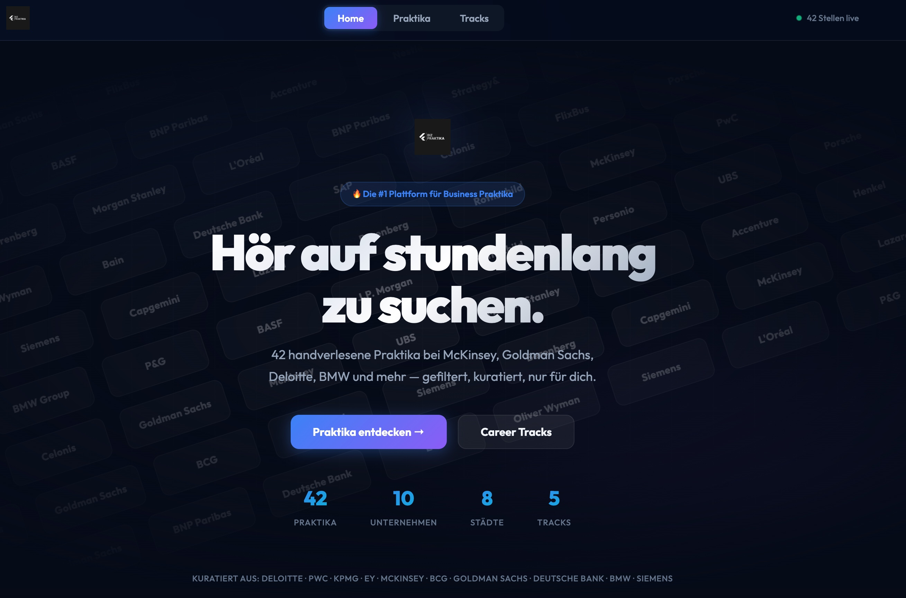
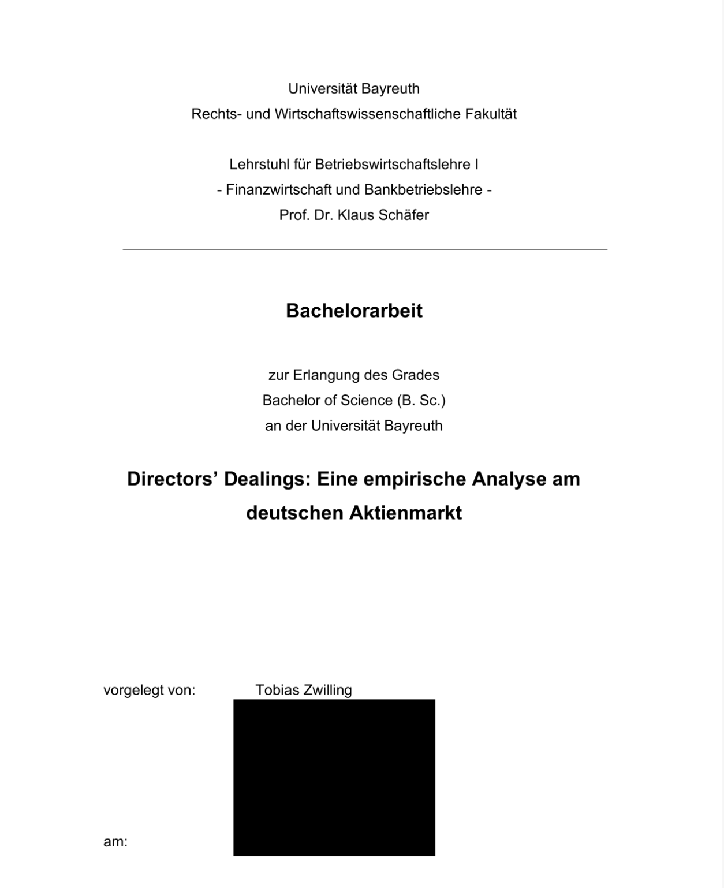

Hallo, mein Name ist Tobias. Ich studiere Master in Management an der Nova SBE und interessiere mich nebenbei sehr für Tech, Daten und den Aktienmarkt. Diese Website ist entstanden, weil vieles von dem, was ich in meiner Freizeit mache und lerne, nicht wirklich auf einen klassischen Lebenslauf passen. Hier findest du ein paar Projekte und Dinge, die mich beschäftigen.
Praxisnahe Projekte, die meine technischen Fähigkeiten demonstrieren
Das Problem
Während meiner Praktikumssuchen bin ich auf ein strukturelles Problem gestoßen: Die Fragmentierung des Recruiting-Marktes macht es extrem ineffizient, relevante Positionen zu finden.
Die Situation:
Das Ergebnis:
Studenten verbringen durchschnittlich 6-8 Stunden pro Bewerbungsrunde damit, 10+ verschiedene Karriereportale manuell zu durchsuchen. Bei 3-4 Bewerbungsrunden pro Semester sind das 24-32 Stunden reine Suchzeit – Zeit, die besser in Vorbereitung oder Networking investiert werden könnte.
Die Lösung
BizPraktika ist eine spezialisierte Aggregationsplattform für Premium Business-Praktika in der DACH-Region. Die Plattform löst das Fragmentierungsproblem durch kuratierte Konsolidierung.
Kern-Features:
User Impact: Reduziert die Suchzeit von 6-8 Stunden auf ca. 15-20 Minuten pro Bewerbungsrunde – eine Zeitersparnis von ca. 90%.
Der Entwicklungsprozess
Strategische Entscheidung:
Nach einem Kosten-Nutzen-Vergleich zwischen automatisiertem Scraping und manueller Kuration habe ich mich für einen Quality-First Approach entschieden.
Technische Implementierung:
Key Learnings
Technische Komplexität ist nicht gleich User Value. Ein manuell kuratiertes System mit 50 hochrelevanten Einträgen löst das Problem besser als ein automatisiertes System mit hohem Rauschen.

Do Company Insiders Beat the Market?
Quantitative Analysis of Insider Trading in Germany
When executives buy or sell their own company's stock, does it predict future price movements? I analyzed over 2,000 insider transactions to find out.
What I Did:
Built a complete event study framework in Python to measure market reactions
to insider trading disclosures at Germany's largest companies (DAX & MDAX).
What I Found:
Technical Implementation:
Impact: The findings suggest exploitable market inefficiencies around insider trading disclosures in Germany.

Während meines BWL-Studiums habe ich gemerkt, dass mich die technische Seite von Business mindestens genauso interessiert wie die klassischen BWL-Themen.
Ich verbringe viel Zeit damit, zu lernen wie man mit Python Daten analysiert, wie man Prozesse automatisiert, oder wie bestimmte Technologien funktionieren. Gleichzeitig beschäftige ich mich mit Finanzmärkten und versuche, beide Welten zu verbinden.
Diese Website ist im Prinzip ein Ort, wo ich zeigen kann, was ich so nebenbei mache – ohne den ganzen LinkedIn-Corporate-Speak.
Von Python-Scripts bis zu Web-Development – ich probiere gerne neue Technologien aus und baue kleine Tools, die mir (oder anderen) das Leben einfacher machen.
Ich interessiere mich für Aktien, Optionen und wie Märkte funktionieren. Manchmal kombiniere ich das mit Programming, z.B. für Datenanalysen oder automatisierte Auswertungen.
Ob Online-Kurse, Bücher oder einfach Learning by Doing – ich lerne am liebsten, indem ich Dinge selbst baue und dabei verstehe, wie sie funktionieren.
Ob für Projektkooperationen, Job-Opportunities oder einfach zum Austausch über Tech und Business – ich freue mich auf deine Nachricht!